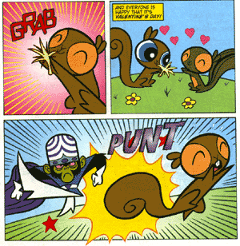

|
パワパフの世界で、孤独なのはダレだろうか？
ガールズにはもちろん、楽しい姉妹や優しいプロフェッサーがいる。
ギャングリンギャングの仲間同士の友情はやや疑問だが、いつも仲間と一緒だ。
アメーバーボーイズしかり、プリンセスしかり。
ではカレは？カレはある種、超越者であろうからそんな言葉に意味ないだろう。
ファジーか？やつはそんな言葉は知らないだろうし、むしろ一人でないと生きていられない。（一応親戚もいるみたいだし）
孤独とは共同体の中にありながら、そこに属することができず、かつて孤独でなかったものがその境遇にいられなくなくなって初めて強く感じるものである。はじめから孤独であったものは、さほど孤独を感じないであろう。
・・・な〜んて、もったいぶらなくたってすでにアニメにおいて「かまってほしいだけの孤独なサルちゃん」とバブルスが看破したように、モジョが孤独なのは言うまでもないですね。
さて、それはともかく今回のお話なんですが、この話でポイントは「バレンタインデー」だってこと！
そうです、バレンタインデーのお話なんですよ。日本みたいにチョコに固執はしませんが、恋人達が愛を語る日であることはどうやらアメリカでも一緒のようで、モジョに限らず独り身にはかなりセツナイ気分にさせてくれるもんです。

いきなりコレです。『バレンタイン死ね死ね団』と化したモジョ。
リスですらこのいちゃつきよう、そりゃムカツキますわな。この思いは万国共通か！
ちょっと横道にそれますが、『パワーパフ・リスちゃん』が放映されたあとのなのか、リスの表現が初期のブサイクリス（＃１参照）でなくなりました。きっとパワパフ世界ではこれ以降、これが「リス」初期のは「モモンガ」ってことになってゆくんでしょうな。
さて、そんなモジョですが、本音は「オレも彼女欲しい〜」ってとこ。（涙）
そしてモジョが一大決心をして向かった先は「MISSUS MATCH MAKER」いわゆる結婚相談所とか出会い系のなんとかセンターといったたぐいの場所ですわ。
ビデオお見合いみたいなものでしょうか。（筆者はこの手のやつに行ったことないのでシステムはよく知らない）
モジョの精一杯の笑顔が痛々しく見えるのは私だけだろうか・・・・
つうか、ここって笑うとこなんだろうなきっと。でも笑えない、笑えないよ〜
しかし、いつもの調子で、
「オレ様は世界でもっとも偉大な天才、最高の知性、最凶の悪、イカした脳みそのモジョジョジョだ！お前はオレ様を崇拝する、愛する、選択の余地はない！なぜならオレ様も君が好・き・だ・か・ら・だ（はあと）」
みたいに喋るものだから・・・
「あの〜うちじゃご希望にあう人はいませんね・・・」
「え、いやその、オレ様は・・・・・モジョジョジョ」
てな感じでケンもホロロに立ち去るモジョ・・・・・
まあ、しゃべりだけが問題じゃないだろうが、あまりにミジメなモジョ。
一方、ガールズはというと

なんか、「ママ」を所望しているご様子。
ブロッサム「ねえ、博士、私たちにママができるのはいつ？」
ユートニウム「そのうちね」
「ママにこの絵をプレゼントするの」「〜なママがいいわ」「ママと〜へ行くの」「ママ募集の公告だしましょうよ、空にでっかく」とか勝手に盛り上がるガールズ。カワイイ娘達にああだこうだ言われて、ただ「そのうち(MAYBE
SOMEDAY)」としか言えないユートニウムの心中はいかなるものか！これはある意味拷問に近いのではないか？
「ぼくだって、できるものならとっくにしてるよ！！うわぁぁぁん（半泣）」
てなふうに、いつブチキレないかとドキドキものだったんですが、その前にいつもの市長からの呼び出しがかかってガールズは出動します。ほっとするユートニウム。

しかし、出動間際にキス付きでフォローするブロッサムはさすがですな。
「う〜ん、やっぱりガールズはイイ子だぁ」
って予想どおりコレでころっといっちゃいます。
さて、今回のガールズの出動目的というのは、タウンズビルに雷をともなった大規模な嵐が迫ってきているというもの。もう、なんでもレスキュー隊ですな。
この嵐は人造人間を作る最後のパワーを雷から得るためにモジョが招いたものなんですが、落雷の力で人造人間を起動させるってのは、まさにフランケンシュタインのモンスターのパロであることは言うまでもありません。しかし、ガールズの活躍によってこの嵐は消滅し、怒るモジョ。だが、雷の最後の一撃が見事に落ちて、人造人間の起動に成功した！！
ちょっと進みすぎたので少し戻りましょう。
傷心のモジョは考えた、恋人がいないのなら造ってしまえばいいんだ！造ろうモジョの花嫁を！
かつてボーイズを造ったこともあるモジョですから、そのくらいは朝飯前なんでしょうが、問題は性格。ボーイズみたいに反抗的ではなく、「モジョを愛して」くれなければ意味がない。パワーだけあればいいってものじゃないので、これはある意味モジョの発明の中でもかなり難しい部類に入るんじゃないだろうか。
ではその製造過程を見てみよう。
材料は『メスのチンパンジーのD.N.A.』『フォーミュラ Y』『キスチョコ』。
『メスのチンパンジーのD.N.A.』は、まだわかかるとしても、『フォーミュラ Y』ってなんだ？
これはなんだかわかりませんが「ケミカルX」よりすげえイイもんらしいです。このヘンからモジョの気合いの入りようがわかるってものです。もしかして、男女の染色体型の違いか？
性染色体はXとYがあり、男性がXY、女性がXX・・・・・ってYじゃ男になっちゃうじゃん。てなわけでこれはあんまし関係なさそうですね。
ポイントは『キスチョコ』
HERSHEY'Sで有名なキスチョコですが、ちょっと調べたところアメリカでもバレンタインの定番商品らしいんですわこれが。小さな愛の詰まったチョコレート、これをはにかんで入れるモジョはなんだかカワイイ。
そして、落雷の力によりモジョの花嫁 ZSA ZSAが誕生するのだ！
ジャジャーン
（これが日本の漫画だったら、ジャーンとかズバーンとかオノマトペ（擬音）が付くところなんだが、オノマトペが貧困なアメコミではめったにそういうことは無いですね。そこらへん、そのうち研究してみたいものです）
ただ、ZSA ZSAの造形のほう、もうちょっとなんとかならんかったのか・・・と思わずにはいられない。
「ジャンジャジャ〜ンボスボロットだい（真樹村正） 」の第一回でのブスロボA制作シーンを思い出してしまった私はオヤジです。
一応説明しとくと、「テレビマガジン」で連載していた、マジンガーZのボスボロットを主役にしたエッチなバカマンガ。その第一回で、ボスボロットがパートナーとなる美少女ロボットを作ろうとするが、電源を入れると美少女のカラを破って暴力的なドブスロボットができてきまった。というお話。（※最近復刻したみたいですね）
どうも脱線が多いな、脱線ついでに、ここで表紙のフィル・モイ版ZSA ZSAとクック版のZSA ZSAの比較をしてみよう。
 |
 |
| フィル・モイ版 |
クック版 |
コミックでは表紙を描く人と本編を描く人が違うことはご存じのとおり。そのため、実際の内容と若干の違いが出たりすることはよくあること。
表紙のフィル・モイ版は目つきが鋭く、口紅をしていたり、肩のところにマントのようなものがあったりと、若干の違いがみられる。また、メタルのテカリ具合がスマートで全体としてシャープな印象がある。
一方、本編のクック版のほうは、ちょっとオマヌケな感じがしないでもない。なんか腕の出方もヘンな感じだし。
しかし、そこがマンガの凄いところ。写真写り悪い娘が、実際会ってみるとしぐさとかがキュートで魅力的だったてのはよくある話しであるように、物語の中で動き始めると、一枚絵のときにはなかった魅力がでてくる。最初はなんじゃこりゃ？って感じていたクック版ZSAZSAですが、今じゃこっちのほうがかわいく感じられるから不思議なものです。でも、ほんのもうちょっとかわいくしてほしかった・・・・
それにしても、バイオな製造方法だったわりに、できたのはメタルなロボットとはどーいうわけなんだ？生体金属なの？なんか釈然としないなあ。そんなときは、アニメ「うそつきはダメよ！」でのユートニウム博士のセリフを借りよう。
「そんな事どうだっていい！」
というわけで、物語に戻ろう。
「モジョの花嫁」はついに誕生した！
しかし、もっとも大切な問題が残っている。
「彼女はオレ様を愛してくれるだろうか・・・・」
そんな心配をするモジョにZSAZSAは行動で答える。

ブチュー（げえぇ〜！！）
ポカンとするブロッサム。なぜか（？）あこがれるバブルス。バターカップはやっぱりこの反応。
なんとなくですが、意外にこの手のやつにウブなのはブロッサムなんではないかと思ったり。
バターカップみたいに「ラブラブモード」になっても、ブロッサムだと素直に反応できないんじゃないかな〜。そんなブロッサムが私は好きです。
それはともかく、この花嫁の愛は海より深く、愛の抱擁で背骨も折れんばかりに締め付けられるモジョ！
「ああ、ちょっと待って・・・ぐぎゃ〜！！！」
さすがにこれはヤバイと思ったのか、モジョを助けようと、ZSAZSAを攻撃するガールズ。
モジョから引き離されたことによって暴走するZSAZSA。
「彼は私のモノよ！（He's MINE.MINE!）」
雷を放電し、てのつけられないZSAZSAにブロッサムの「氷の息」攻撃がきまり、砕け散るZSAZSA！
そして・・・モジョの花嫁はスクラップと化した・・・・・・・
あまりのことに意気消沈したモジョは抵抗することもなく、寂しげに刑務所に連行される。そんなモジョの姿に今回ばかりはさすがのガールズもしんみり。
バブルス「モジョかわいそう・・愛が欲しかっただけなのよ・・・」
ブロッサム「ねえ、いい考えがあるわ」
刑務所で涙にくれるモジョにガールズからバレンタインのプレゼント。

ありがとうも言わずに「出ていけ！」と怒鳴るモジョ。
この気持ちわかるよね。
心がいっぱいになった、ダレにも見せたくない、ダレにもいて欲しくない大切な時間。
そして、コミックス中最高の感動シーン。

こんな幸せそうなモジョを見たことあるだろうか。
孤独なモジョにささやかなバレンタインの「小さな愛の物語」。
いかがだったろうか、たまにはこんな話もあるんですね。
一応、このあとにもガールズの小さな心にも感じるところがあったのか、ユートニウムに甘えるエピローグのようなものもあるのですが、こっちもほんわかしんみりとしていい感じです。
ユートニウムが「ガールズ、カワイイぼくの天使たち」とか思っちゃうのも無理ないくらいのかわいらしさ。
細かいところで、よくわからん部分があるものの（ZSAZSAがあの作り方でなんでロボット？とか、ガールズのプレゼントのはいったなんだったか？自分たちで作ったとか言ってるんですが、なんかよくわからん）いつものノリと違って、ハートフルでちょっぴりジーンときます。思わずモジョに感情移入しちゃったよ。
正直、表紙みてこの巻を買うか迷ったんですよね。「うーん、なんだかなあ」って感じで。ただ、じっくり読んでみるとセリフの一つ一つがせつなくてねえ。
「フランケンシュタインの花嫁」のパロディになっている話なんですが、ご覧のように、モトネタを知らなくても問題なく楽しめますのでご安心ください。
おまけですが、パワパフのファンコミックの総本山the
Pokey Oaks Fanfic Libraryでもフランケンシュタインをネタに使った話があって、こちらにちらっと「フランケンシュタインの花嫁」のカットも出てきますので、興味あるかたはどうぞ（こちらもイイ話）。＞「The
Powerpuff Girls Meet Frankenstein」（情報提供：にこぽん さん）
|